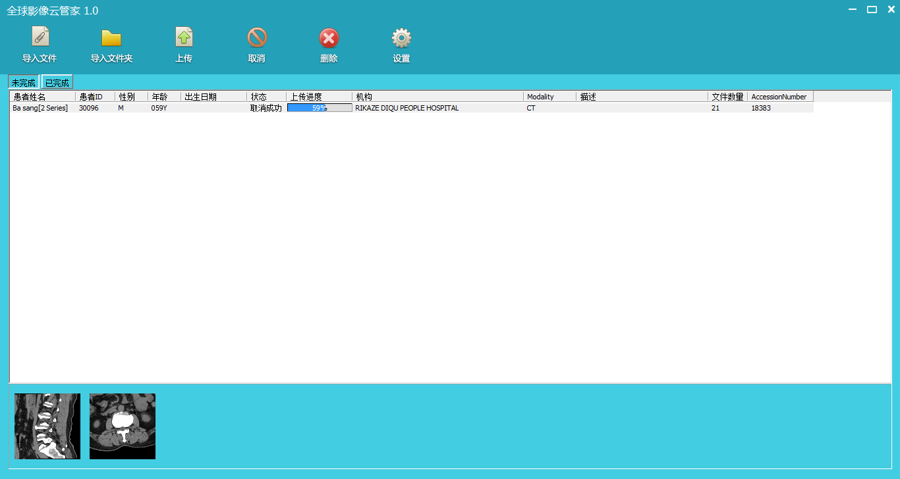

进入http://www.eimageglobal.com，当页首滚动显示此页面时，点击下载安装
双击下载的安装程序，弹出以下界面：
点击“下一步”，进入以下界面：
选择安装的目标文件夹，点击“下一步”，进入以下界面：
点击“下一步”，进入以下界面：
点击“下一步”，进入安装，安装完成后，显示最后完成界面：
点击完成，完成安装
双击桌面图标或windows开始菜单的“全球影像云管家”启动软件,输入帐号和密码（同网站的帐号一致），选择“专家入口”或“普通入口”进行登录，
登录后界面如下：
“未完成”标签页显示未完成上传的Study列表，“已完成”标签页显示已完成上传的Study列表。
因目前上传的历史记录暂时已客户端保存的为准，所以通过不同的PC上传的历史记录相互之间是不可见的。
用户选择“导入文件”或“导入文件夹”，上传Dicom文件。在选择“导入文件”的情况下，用户需要自己选择导入的Dicom文件，最多可以同时选择200个。推荐使用“导入文件夹”的方式，软件将自动扫描文件夹下的文件，将合格的Dicom文件导入到Study列表中，注意软件不会对所选的文件夹进行递归扫描，只会扫描所选文件夹的文件，例如文件夹结构是D:\a\b，如果你选择的是D:\a，那么软件只会扫描D:\a目录下的文件，不会扫描D:\a\b的文件，所以用户应该选择Dicom文件所在的直接目录路径。
导入完成后结果界面如下显示：
软件会显示新增Study和更新Study的个数。更新Study：当软件扫描Dicom文件，发现Dicom对应的Study已经存在（包括“未完成”和“已完成”列表），但此文件对应的Dicom信息未存在，那么会更新此Study。如果更新的Study原来是属于“已完成”列表的，那么会从“已完成”列表中删除，增加到“未完成”列表中。
用户通过双击需要的Study项上传或取消上传，也可以单击选择目标Study，再点击“上传”或“取消”按钮进行上传或取消上传操作。
在“未完成”列表标签界面下，用户可以单击Study，查看Study中Series缩略图，界面如下：
底部显示有几张缩略图，就表示该Study有几个Series。双击缩略图，可以显示该Series的所有缩略图，界面如下：
验证并发数量：系统同时验证的文件数，此参数不建议修改。
上传并发数量：当电脑的带宽和资源允许的情况下，可以适当设置大一些的数字，加快上传的速度。
缩略图X轴：生成缩略图的宽度，单位像素，此参数不建议修改。
缩略图缓冲：系统每次生成缩略图的数量，当电脑的内存比较宽裕且Dicom文件包含的图像比较多的时候，可以适当设置大一些的数字，加快生成速度。
缩略图文件夹：生成缩略图存放的文件夹路径。
用户登录http://www.eimageglobal.com，查看我的云盘，界面如下： 查看在“操作”列下的“阅片”（上图红色圈部分），如果此文本按钮变成蓝色，表示Study的Dicom文件已经成功进行了处理，用户可以查看Study的相关图片信息，如果是灰色，那么表示还未处理完成，当前不能查看Study的相关图片信息。